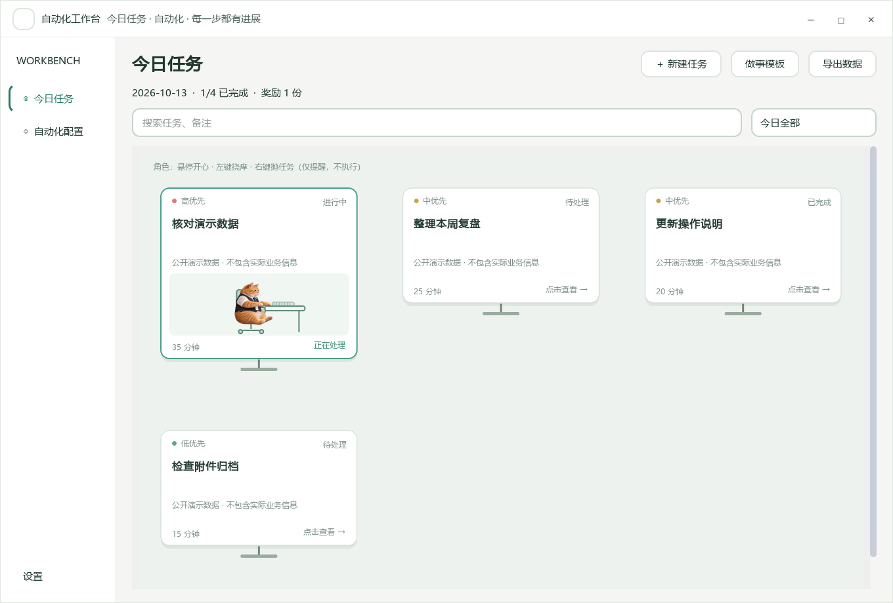

CASE 004 / LOCAL-FIRST DESKTOP APP
认真做事，
也可以有点意思。
VBA 工作台
把任务、实际用时、做事模板和桌面陪伴放在一起。
少切换几个窗口，多留一点专注。
Windows 桌面应用 · Python 3.12 · 公开脱敏版
网页展示案例；下载后在本地运行，不是浏览器在线工具。

统一安排
普通任务与周期事项放在一起，标清优先级与预估时间。
带着模板做
任务关联 SOP、邮件话术、附件和在线文档，随时打开。
留下可复盘记录
创建、开始、暂停、完成时间入库，历史记录支持导出。
PRODUCT IN USE
不是概念图，是能操作的程序。
下面均由实际程序加载虚构任务后渲染。点击图片可以放大查看。
A LITTLE COMPANY
给重复日常，
一点即时反馈。
小马、腊肠犬、猴子与橘猫有各自的造型。角色互动是可选体验，任务管理不依赖动画。
下方是应用角色渲染器导出的动作样例，点击播放。Blender 工程和预计算动作随源码提供；日常使用无需安装 Blender。
点击播放，看看它们的脚步。
TRY IT LOCALLY
下载、解压，然后打开。
- 下载公开源码
在 GitHub 点击 Code → Download ZIP，完整解压。公开版初始任务库为空，不含个人任务或公司资料。
- 首次运行
安装 Python 3.12 并勾选 Add Python to PATH，双击“打开工作台.bat”。首次需联网准备依赖。
- 放到桌面，随手打开
双击“创建桌面快捷方式.bat”，沿用自定义图标，并尝试设置 Ctrl + Alt + V；可以在快捷方式属性中更改。
ENGINEERING / SCOPE
能展示什么，也说明边界。
Python + PySide6 负责桌面交互，SQLite 保存本地任务与计时，Blender 提供可编辑的角色骨骼动作。
公开版本包含任务管理、模板、悬浮窗、角色互动和工作流配置编辑器。企业 WMS、邮件账号、私人宏文件及专用执行适配器不包含在内，不能把配置编辑能力等同于业务系统已接通。角色素材用于作品展示，商用前需另行核验授权。